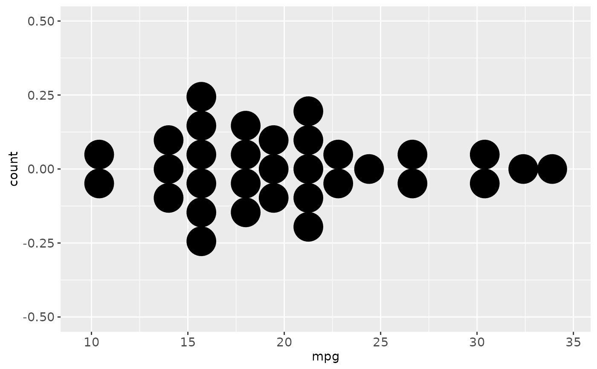
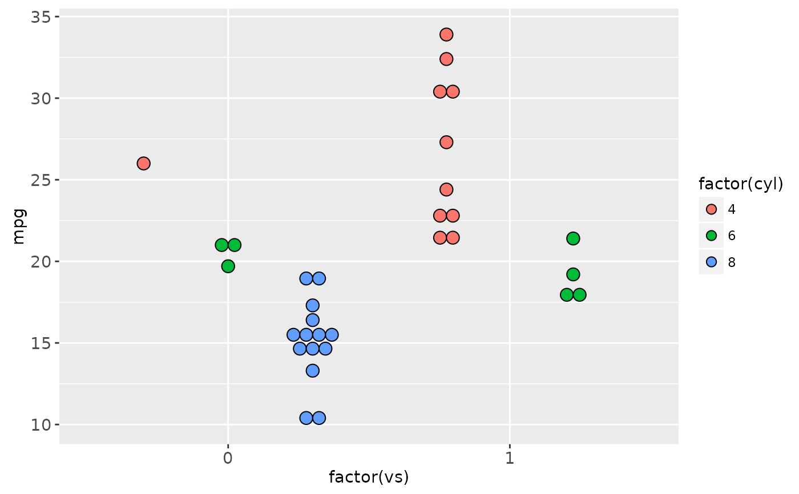
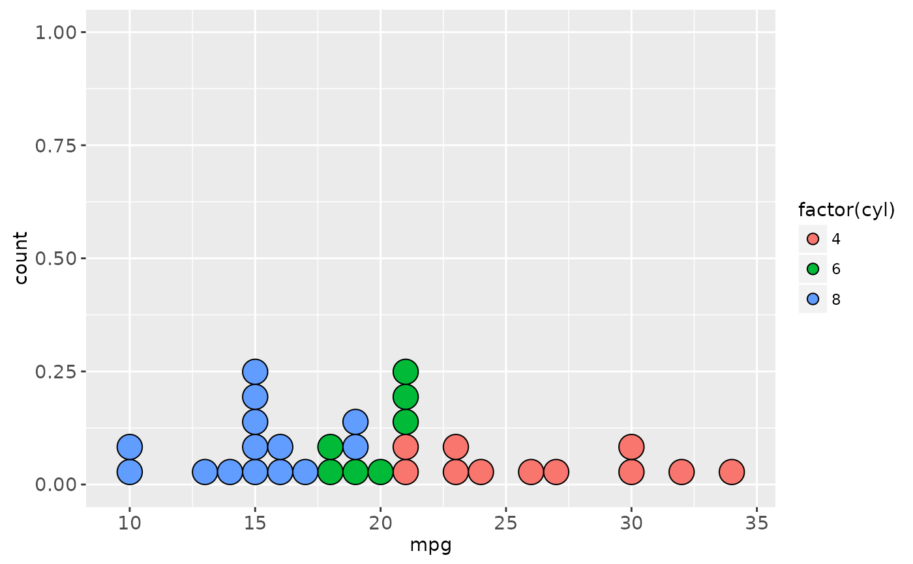

In a dot plot, the width of a dot corresponds to the bin width (or maximum width, depending on the binning algorithm), and dots are stacked, with each dot representing one observation.
Usage
geom_dotplot(
mapping = NULL,
data = NULL,
position = "identity",
...,
binwidth = NULL,
binaxis = "x",
method = "dotdensity",
binpositions = "bygroup",
stackdir = "up",
stackratio = 1,
dotsize = 1,
stackgroups = FALSE,
origin = NULL,
right = TRUE,
width = 0.9,
drop = FALSE,
na.rm = FALSE,
show.legend = NA,
inherit.aes = TRUE
)Arguments
- mapping
Set of aesthetic mappings created by
aesoraes_. If specified andinherit.aes = TRUE(the default), it is combined with the default mapping at the top level of the plot. You must supplymappingif there is no plot mapping.- data
The data to be displayed in this layer. There are three options:
If
NULL, the default, the data is inherited from the plot data as specified in the call toggplot.A
data.frame, or other object, will override the plot data. All objects will be fortified to produce a data frame. Seefortifyfor which variables will be created.A
functionwill be called with a single argument, the plot data. The return value must be adata.frame., and will be used as the layer data.- position
Position adjustment, either as a string, or the result of a call to a position adjustment function.
- ...
other arguments passed on to
layer. These are often aesthetics, used to set an aesthetic to a fixed value, likecolor = "red"orsize = 3. They may also be parameters to the paired geom/stat.- binwidth
When
methodis "dotdensity", this specifies maximum bin width. Whenmethodis "histodot", this specifies bin width. Defaults to 1/30 of the range of the data- binaxis
The axis to bin along, "x" (default) or "y"
- method
"dotdensity" (default) for dot-density binning, or "histodot" for fixed bin widths (like stat_bin)
- binpositions
When
methodis "dotdensity", "bygroup" (default) determines positions of the bins for each group separately. "all" determines positions of the bins with all the data taken together; this is used for aligning dot stacks across multiple groups.- stackdir
which direction to stack the dots. "up" (default), "down", "center", "centerwhole" (centered, but with dots aligned)
- stackratio
how close to stack the dots. Default is 1, where dots just just touch. Use smaller values for closer, overlapping dots.
- dotsize
The diameter of the dots relative to
binwidth, default 1.- stackgroups
should dots be stacked across groups? This has the effect that
position = "stack"should have, but can't (because this geom has some odd properties).- origin
When
methodis "histodot", origin of first bin- right
When
methodis "histodot", should intervals be closed on the right (a, b], or not [a, b)- width
When
binaxisis "y", the spacing of the dot stacks for dodging.- drop
If TRUE, remove all bins with zero counts
- na.rm
If
FALSE(the default), removes missing values with a warning. IfTRUEsilently removes missing values.- show.legend
logical. Should this layer be included in the legends?
NA, the default, includes if any aesthetics are mapped.FALSEnever includes, andTRUEalways includes.- inherit.aes
If
FALSE, overrides the default aesthetics, rather than combining with them. This is most useful for helper functions that define both data and aesthetics and shouldn't inherit behaviour from the default plot specification, e.g.borders.
Details
With dot-density binning, the bin positions are determined by the data and
binwidth, which is the maximum width of each bin. See Wilkinson
(1999) for details on the dot-density binning algorithm.
With histodot binning, the bins have fixed positions and fixed widths, much like a histogram.
When binning along the x axis and stacking along the y axis, the numbers on y axis are not meaningful, due to technical limitations of ggplot2. You can hide the y axis, as in one of the examples, or manually scale it to match the number of dots.
Aesthetics
geom_dotplot understands the following aesthetics (required aesthetics are in bold):
x
y
alpha
colour
fill
Computed variables
- x
center of each bin, if binaxis is "x"
- y
center of each bin, if binaxis is "x"
- binwidth
max width of each bin if method is "dotdensity"; width of each bin if method is "histodot"
- count
number of points in bin
- ncount
count, scaled to maximum of 1
- density
density of points in bin, scaled to integrate to 1, if method is "histodot"
- ndensity
density, scaled to maximum of 1, if method is "histodot"
Examples
ggplot(mtcars, aes(x = mpg)) + geom_dotplot()
#> `stat_bindot()` using `bins = 30`. Pick better value with `binwidth`.
#> Warning: Unit type of dotdia should be 'npc'
ggplot(mtcars, aes(x = mpg)) + geom_dotplot(binwidth = 1.5)
#> Warning: Unit type of dotdia should be 'npc'
# Use fixed-width bins
ggplot(mtcars, aes(x = mpg)) +
geom_dotplot(method="histodot", binwidth = 1.5)
#> Warning: Unit type of dotdia should be 'npc'
# Some other stacking methods
ggplot(mtcars, aes(x = mpg)) +
geom_dotplot(binwidth = 1.5, stackdir = "center")
#> Warning: Unit type of dotdia should be 'npc'

ggplot(mtcars, aes(x = mpg)) +
geom_dotplot(binwidth = 1.5, stackdir = "centerwhole")
#> Warning: Unit type of dotdia should be 'npc'
# y axis isn't really meaningful, so hide it
ggplot(mtcars, aes(x = mpg)) + geom_dotplot(binwidth = 1.5) +
scale_y_continuous(NULL, breaks = NULL)
#> Warning: Unit type of dotdia should be 'npc'
# Overlap dots vertically
ggplot(mtcars, aes(x = mpg)) + geom_dotplot(binwidth = 1.5, stackratio = .7)
#> Warning: Unit type of dotdia should be 'npc'
# Expand dot diameter
ggplot(mtcars, aes(x = mpg)) + geom_dotplot(binwidth = 1.5, dotsize = 1.25)
#> Warning: Unit type of dotdia should be 'npc'
# \donttest{
# Examples with stacking along y axis instead of x
ggplot(mtcars, aes(x = 1, y = mpg)) +
geom_dotplot(binaxis = "y", stackdir = "center")
#> `stat_bindot()` using `bins = 30`. Pick better value with `binwidth`.
#> Warning: Unit type of dotdia should be 'npc'
ggplot(mtcars, aes(x = factor(cyl), y = mpg)) +
geom_dotplot(binaxis = "y", stackdir = "center")
#> `stat_bindot()` using `bins = 30`. Pick better value with `binwidth`.
#> Warning: Unit type of dotdia should be 'npc'
#> Warning: Unit type of dotdia should be 'npc'
#> Warning: Unit type of dotdia should be 'npc'
ggplot(mtcars, aes(x = factor(cyl), y = mpg)) +
geom_dotplot(binaxis = "y", stackdir = "centerwhole")
#> `stat_bindot()` using `bins = 30`. Pick better value with `binwidth`.
#> Warning: Unit type of dotdia should be 'npc'
#> Warning: Unit type of dotdia should be 'npc'
#> Warning: Unit type of dotdia should be 'npc'
ggplot(mtcars, aes(x = factor(vs), fill = factor(cyl), y = mpg)) +
geom_dotplot(binaxis = "y", stackdir = "center", position = "dodge")
#> `stat_bindot()` using `bins = 30`. Pick better value with `binwidth`.
#> Warning: Unit type of dotdia should be 'npc'
#> Warning: Unit type of dotdia should be 'npc'
#> Warning: Unit type of dotdia should be 'npc'
#> Warning: Unit type of dotdia should be 'npc'
#> Warning: Unit type of dotdia should be 'npc'

# binpositions="all" ensures that the bins are aligned between groups
ggplot(mtcars, aes(x = factor(am), y = mpg)) +
geom_dotplot(binaxis = "y", stackdir = "center", binpositions="all")
#> `stat_bindot()` using `bins = 30`. Pick better value with `binwidth`.
#> Warning: Unit type of dotdia should be 'npc'
#> Warning: Unit type of dotdia should be 'npc'
# Stacking multiple groups, with different fill
ggplot(mtcars, aes(x = mpg, fill = factor(cyl))) +
geom_dotplot(stackgroups = TRUE, binwidth = 1, binpositions = "all")
#> Warning: Unit type of dotdia should be 'npc'
#> Warning: Unit type of dotdia should be 'npc'
#> Warning: Unit type of dotdia should be 'npc'
ggplot(mtcars, aes(x = mpg, fill = factor(cyl))) +
geom_dotplot(stackgroups = TRUE, binwidth = 1, method = "histodot")
#> Warning: Unit type of dotdia should be 'npc'
#> Warning: Unit type of dotdia should be 'npc'
#> Warning: Unit type of dotdia should be 'npc'

ggplot(mtcars, aes(x = 1, y = mpg, fill = factor(cyl))) +
geom_dotplot(binaxis = "y", stackgroups = TRUE, binwidth = 1, method = "histodot")
#> Warning: Unit type of dotdia should be 'npc'
#> Warning: Unit type of dotdia should be 'npc'
#> Warning: Unit type of dotdia should be 'npc'
# }